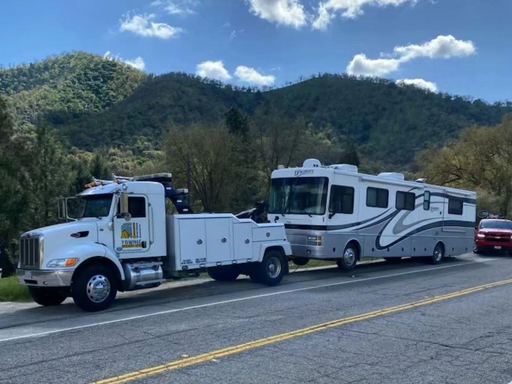

Motorhomes, Box Trucks & Shuttles
Commercial and specialty vehicles can be moved using equipment selected around the vehicle’s size, weight and configuration.
Commercial vehicle towing for motorhomes, box trucks, shuttles and oversized fleet equipment in Fresno and surrounding areas.

Commercial and oversized vehiclesMotorhomes, box trucks, shuttles, work vans and fleet vehicles vary widely in wheelbase, weight, overhang and drivetrain. The towing setup should match the vehicle, not the other way around.
Commercial and specialty vehicles can be moved using equipment selected around the vehicle’s size, weight and configuration.
Rear overhang, liftgates, slide-outs, frame access and underbody clearance are assessed to reduce unnecessary stress or scraping.
Breakdowns, relocations and recurring towing needs can be coordinated for local businesses, operators and fleet managers.
Serving Fresno, Clovis and surrounding communities with local response and long-distance capability available for select commercial tows.